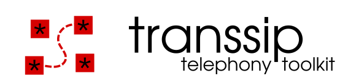

Latest version:
None
Git repository:
git clone git://
github.com/gnumaniacs/transsip
.git
Git web:
http://src.transsip.org/
Bug tracker:
http://bugs.transsip.org/
Mailing list:
via
Google
,
Gmane
,
Archive
Sponsorship:
Interested? Contact us!
IRC / Cryptocat:
Freenode
,
Crypto.cat
Blog:
http://blog.transsip.org/
(
RSS
)
Abstract
transsip is still in development. Come back later.
Copyright (C) 2012
Daniel Borkmann